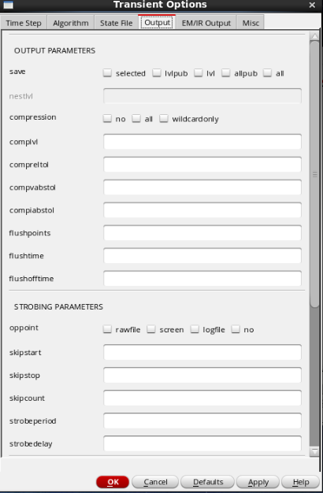
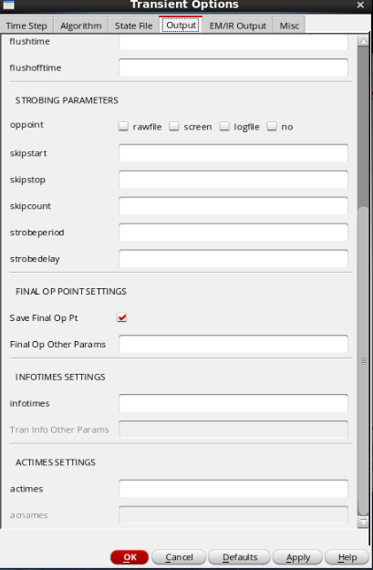
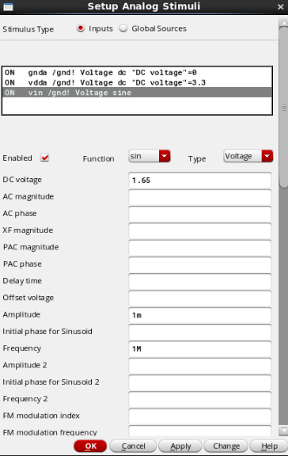
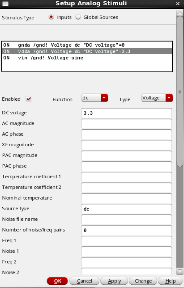
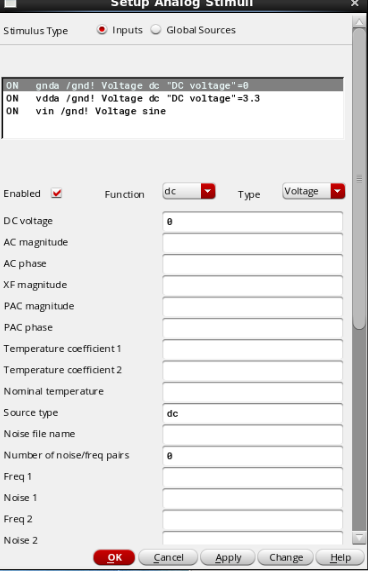

IC笔记之瞬态仿真
IC笔记系列再次更新，这次介绍一下瞬态仿真。
1 概述
瞬态仿真是什么？
瞬态仿真是电路在给定的输入激励下，在设定的时间范围内计算电路时域瞬态响应性能的一种仿真手段。
瞬态仿真一般是集成电路的第一个仿真，是年轻人的第一个仿真手段；通常是验证稳定性、速度、精度等等，需要在多次不同的瞬态分析过程才能得出结论。
1.1 基本设置
在"ADE"中选择"Analyses"-"Choose"，可以选择仿真功能选择。点击"tran"后，可以看到如下图的基本设置界面。
- "Stop Time"，设置仿真时间
仿真时间默认从0时刻开始，这里只设置停止时间。时间单位为可以是"s"（秒）、"m"（毫秒）和"u"（微秒）。 - "Accuracy Defaults(errpreset)"，设置仿真精度和速度
软件内置有三种仿真精度："conservative"、"moderate"、"liberal"。"conservative"具有最高的精度，但速度较慢，用于高精度模拟电路和混合信号电路；"liberal"则是速度最快，精度较差，用于数字电路和变化率不高的模拟电路；"moderate"是比较折衷的模式，用于绝大多数模拟电路。如果需要更高的精度，则要在高级设置中配置参数。 - "Transient Noise"，设置瞬态噪声
- "Dynamic Parameter"，设置动态参数
- "Enabled"，设置瞬态仿真启用
1.2 高级设置
在图1-1中点击右下角的"Options"可进入高级设置。
1.2.1 Time Step标签页
Simulation Interval Parameters
- "start"：仿真起始时刻。仿真器默认起始时间为0s。
- "outputstart"：输出波形时间。如果设计者的仿真时间较长，而只需观察某个时间点或者部分时间段内的电路瞬态特性输出，则可以通过该参数控制数据输出。
Time Step Parameters
- "step"：最小的时间步长。
- "maxstep"：最大时间步长，根据"errpreset"中的精度设定取得默认值。
1.2.2 Algorithm标签页
Initial Condition Parameters
用户可以利用设置电路节点状态的初始化语句（ic statement）或电容、电感等模型内的初始条件参数（ic parameters）两种方式为瞬态仿真设置初始条件。其中电容中设置的是初始电压值，电感中设置的是初始电流值。如果没有进行设置，仿真器将默认采用直流分析的结果作为初始条件。对这个参数进行设置时要格外注意，如果对电路分析不明，贸然设置电路节点的初始值，极易造成电路瞬态仿真出现收敛性问题，并产生错误结果。
- "ic"：设定通过何种方式设置初始条件。
- ic=dc：忽略任何设置的初始条件，直接采用直流分析的结果。
- ic=node：忽略电容、电感等器件上设置的初始条件，而采用"ic statement"设置的初始条件。
- ic=dev：忽略由"ic statement"设置的初始条件，采用电容、电感上的初始条件。
- ic=all：两种初始条件都将被采用。当设置条件发生冲突时，"ic
parameters"比"ic statement"的优先级更高。
> "ic statement"的格式是ic NodeName=value。
> 例：ic V1=1 M1:int_d=3.3 L1:1=10u
> 上句表示的是：在节点V1上的初始电压是1V；在MOS管M1的漏极电压是3.3V；在电感L1 上流过的初始电流是10μA。
- "skipdc"：最小的时间步长。 选择跳过直流分析。在没有直流分析的情况下，电路的初始解将采用通解，或是从由"readic"定义的文件中读取初始条件。如果"readic"中没有定义，则将从"ic statement"中获取初始条件。无论是否跳过直流分析，器件上的初始条件肯定都会被采用。如果一个节点没有被赋予初始条件，将自动被仿真器设置为零。
- "readic"：从文件中读取初始条件。
Initial Condition Parameters For Oscillator
用户可以手动配置振荡器的初始条件，也可以选择使用软件自动配置。
Convergence Parameters
当电路在仿真时存在无限快的响应速度（如一个电路节点不存在任何电容），仿真器可能会产生收敛性问题。为了避免出现这种问题，需要设置"cmin"参数，给该节点设置一个合理的对地电容值。
- "readns"：从文件中读取电路瞬态仿真的初始解。
- "cmin"：设定每个节点对地的最小电容
Integration Method Parameters
该参数用于设计者根据仿真速度和仿真精确度选择合适的积分方式。仿真器提供3种不同的积分方式："backward-Euler"，"Trapezoidal"，"Second-order
Gear"。根据这3种方式一共组合出6种模式，分别为"euler"、"traponly"、"trap"、"gear2only"、gear2"、"trapgear2"。
如果设计者需要高精度仿真，可以选择"trapezoidal"积分方式。但是，这种积分方式对前一时刻计算产生的误差非常敏感，因此在容差很大时并不是一种很好的选择。在容差很大而且要求速度较快的情况下，通常选择"Second-order
Gear"积分法。"Second-order
Gear"积分法比"backward-Euler"积分法更加精确。
Accuracy Parameters -
"relref"：相对收敛标准的参考，默认值从"errpreset"得到。包括以下几个选项。
"relref =
pointlocal"：即relref=局部点，这个设置用来定量比较每个节点的值相对于待分析节点上当前数值的相对误差。
"relref =
alllocal"：即relref=局部所有点，定量比较过去所有时间点的值相对于最大节点值的相对误差。
"relref =
sigglobal"：即relref=所有信号点，定量比较每个电路上信号值相对于电路中所有信号中的最大值的相对误差。
"relref =
allgolbal"：功能与sigglobal选项基本相同。另外，对每个节点最大悬浮电流值设定比较方程，此时不能满足基尔霍夫电流方程。
- "lteratio"：比例系数，用于计算Newton容差中的LTE 容差。
Newton Parameters
- "maxiters"：在每个时间步长内最多的迭代次数。
- "restart"：如果有任何条件发生变化，是否从最开始重新计算直流解。如果不重新计算，将直接采用上一次的初始值。
1.2.3 State File标签页
StateFile Parameters
状态文件（State File）主要有两个用处： 1. 将保存下来的状态文件用于后续的仿真分析中。如在一次瞬态分析中保存下结束时刻的信息，在下一次瞬态分析中能够以该时刻作为起始点继续完成后续时间段的分析。 2. 用户能够利用状态文件自动完成初始条件的更新。设计者能够利用仿真器将一次分析的初始时刻工作点或终止时刻工作点生成状态文件。同时，设计者也能手动编写一个状态文件。
- "write"：将瞬态分析的初始状态解写到指定的文件中。
- "writefinal"：将瞬态分析的最终解写到指定的文件中。
Save-Restart Parameters
该参数用于配置保存和载入的频率等参数。
1.2.3 Output标签页
 
Output Parameters
仿真器默认情况下会把所有仿真数据都保存下来，但有时并不需要所有的数据量。仿真器允许设计者选择保存需要的数据。如果需要得到更精确的结果，也可以增大数据输出量。
该参数配置"compression"输出模式，将恒定信号的重复记录删除。
Strobing Parameters
该参数配置"strobing"输出模式。在保存点之间设置一个时间间隔。虽然仿真器计算过这些数据，但是并没有将其保存输出。
Final OP Point Settings
该参数配置静态工作点的保存等参数。
Infotimes Settings
该参数配置"infotimes"输出模式。允许设计者保存某些自定义时刻的工作点数据。如果需要保存多个时刻的工作点，填入时间矢量之间以空格隔开。
Actimes Settings
未找到相关资料，待补充。
1.2.5 EM/IR Output标签页
该标签页涉及EM（电子迁移）和IR（IR压降）。恕我直言，不会。
1.2.6 Misc标签页
该标签页为一些难以分类的配置，毕竟都写了是misc了。
- Annotation Parameters，注释。
- Captab Parameters，电容列表参数。
- Additional Parameters，额外参数。
2 实例
仿真电路如图。瞬态仿真实例选择了使用二极管连接方式的PMOS作为负载的共源极电路。
2.1 配置激励源
与前一篇关于反相器仿真中对于激励信号的配置不同，这次选择直接对端口进行激励源配置。
在ADE窗口中选择"Setup"-"Stimuli"。
按照下面三张图片依次对三个端口的输入信号进行配置。
  
2.2 配置瞬态仿真
选择瞬态仿真模式，并选择仿真时间和精度。
选取观测信号后，仿真配置结束。
2.3 仿真结果
下图是仿真结果。局部放大后，可以通过"M"键选取曲线上的点，对信号进行进一步分析。
总结
以上就是ADE中瞬态仿真的大部分介绍。本次笔记结束。 :@(击掌)